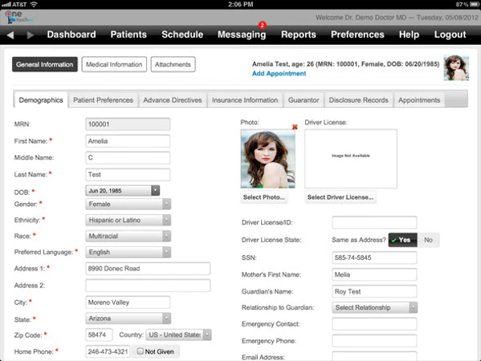

OpenMRS
 https://www.goodfirms.co/software/openmrs
https://www.goodfirms.co/software/openmrs
|
 |
OpenMRS funciona como software de registro médico electrónico de código abierto para mejorar la prestación de atención médica en entornos de bajos recursos. Estas soluciones de software EMR basadas en la nube permiten a los consultorios diseñar y crear los registros médicos de los pacientes |
- Sin un lenguaje de programación, este software facilita el diseño de un sistema de historia clínica personalizad
- Sirve como plataforma de software y aplicaciones de referencia
- Para los usuarios, sirve como un conjunto de herramientas con el conocimiento del análisis médico y de políticas que construye su propio EMR
|
OpenEMR
 https://www.open-emr.org/
https://www.open-emr.org/
|
|
OpenEMR es otra aplicación de gestión de prácticas médicas y registros de salud electrónicos de código abierto y popular. Está certificado por ONC Complete Ambulatory EHR, y una comunidad activa de voluntarios y profesionales lo respalda. |
- El objetivo de los miembros de la comunidad es hacer de este software de registro médico electrónico una alternativa superior a sus contrapartes patentadas
- Es gratuito y de código abierto
- Es una alternativa superior a sus contrapartes patentadas
|
| OneTouch EMR
https://www.onetouchemr.com/
|
 |
OneTouch EMR es un registro médico electrónico de código abierto fácil de usar que funciona de manera rápida y eficiente. Puede personalizarlo para que se adapte a las necesidades del hospital de forma flexible y rápida. |
- Este software de gestión hospitalaria se puede utilizar tanto en dispositivos móviles como de escritorio.
- La solución ayuda a las prácticas relacionadas con la medicina interna, médicos generales y medicina familiar
- La solución ayuda a los médicos a administrar en gran medida las capacidades de toma de notas
|
| Nosh
https://noshemr.wordpress.com/
|
|
Nosh es el sistema de historia clínica electrónica de código abierto totalmente alojado. Este nuevo sistema de gráficos de salud de código abierto ofrece una experiencia de usuario final definitiva con diferentes tipos y configuraciones de EMR. |
- Este software de registros médicos electrónicos está diseñado para ser modular.
- Si no necesita algunas funciones, puede desactivarlas.
- Algunos elementos se pueden ampliar como rCopia ePrescribing y el módulo de gestión de terapia de medicamentos de Medicare.
|
| Solismed
https://www.solismed.com/
|
|
Si está buscando un software de registro médico electrónico gratuito para su negocio, entonces Solismed es la opción adecuada que ofrece una serie de característica |
- Está creado para prácticas de múltiples especialidades y clínicas gratuitas
- Proporciona las herramientas de ahorro para aumentar la productividad.
- Los usuarios pueden administrar los servicios públicos, las facturas y las existencias desde este único sistema integrado que ofrece programación de citas
|
Bahmni
 https://www.bahmni.org/
https://www.bahmni.org/
|
 |
En todo el mundo, este software EMR fácil de usar es ampliamente aceptado e implementado en varios hospitales. Este sistema hospitalario y EMR utiliza OpenMRS para gestionar los registros médicos de los pacientes |
- El modelo de este software médico electrónico gratuito es flexible y los flujos de trabajo y los procesos se diseñan según los requisitos del hospital
- Encontrará que este software de facturación médica es simple y fácil de usar
- Este software médico electrónico de código abierto es compatible con los servicios de atención médica en zonas rurales
|
| FreeMED
http://freemedsoftware.org/
|
 |
El software FreeMED proporciona un backend XML-RPC y múltiples formatos de importación y exportación. Este sistema de gestión hospitalario gratuito está desarrollado para ofrecer servicios mejorados de gestión de la información sanitaria a los hospitales. |
- Para cuidar los registros de los pacientes, este sistema de registros médicos electrónicos de código abierto se puede modificar según los requisitos de los hospitales
- Es un paquete de administración de prácticas con todas las funciones basado en Apache, PHP y MySQL.
- Se ejecuta en cualquier navegador web y es un sistema de gestión de prácticas y registros médicos electrónicos con licencia GPL
|
| DoliMed EMR
https://www.dolimed.com/
|
 |
DoliMed es la versión especializada del software Dolibarr ERP y CRM que se mejora con el módulo Dolimed. Este software de registros médicos electrónicos de código abierto se adapta a las necesidades de los médicos y centros médicos para seguir a sus pacientes. |
- Administrar la actividad del cuidador como pacientes, documentos, consultas y mucho más, encontrará soluciones fáciles de usar.
- Desde el área de descarga, puede instalar y utilizar este software como una aplicación independiente.
- Es un software rápido, seguro y fácil de usar que se basa en una solución ERP estable y utilizable
|
| 75Health
https://www.capterra.com/p/140480/75health/
|
 |
75Health es una solución gratuita basada en la nube que ayuda a los consultorios médicos a administrar la información del paciente y los registros digitales. |
- Sus funcionalidades incluyen recetas electrónicas, gráficos, soporte de decisiones clínicas
- A demas un programador integrado, administración de listas de medicamentos, seguimiento de vacunas, programación de citas y reconocimiento de voz.
- Los recordatorios automáticos para el paciente, la generación automática de informes y el programador de citas.
|
GoTelecare
 https://gotelecare.com/telemedicine-platform/
https://gotelecare.com/telemedicine-platform/
|
|
GoTelecare es un software de telemedicina gratuito que es seguro según HIPAA y permite que el médico y el paciente realicen videoconferencias. Tiene capacidades integradas de EMR, facturación médica y mHealth, que requieren gastos mínimos o nulos para su implementación. Además, los pacientes no tienen que gastar nada para aprovechar los servicios de este software de telemedicina con todas las funciones. |
- Solución completa de telemedicina de extremo a extremo
- Libre de implementar e implementar sin costos ocultos
- Fácilmente personalizable para cumplir con los objetivos de su programa médico
- Solo se requiere computadora de escritorio, computadora portátil o teléfono inteligente
- Compatible con pagos HIPAA y PCI
- Incluye programación, facturación médica y cobros
|
| Nosh
https://noshemr.wordpress.com/
|
|
------------ |
|
| Nosh
https://noshemr.wordpress.com/
|
|
------------ |
|
| Nosh
https://noshemr.wordpress.com/
|
|
------------ |
|